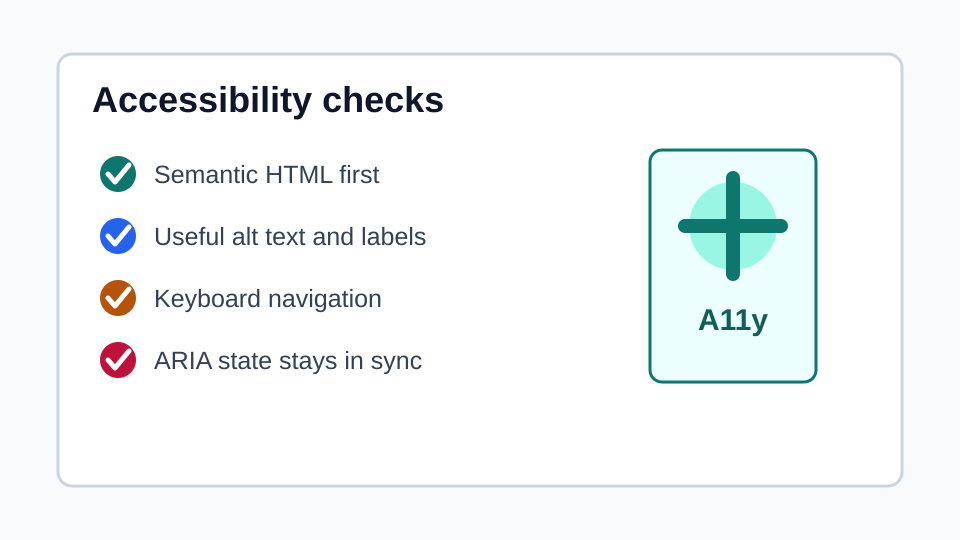
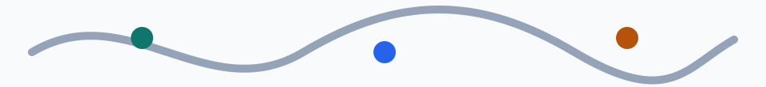

不理想
<div class="title">課程總覽</div>
<div class="btn" onclick="save()">儲存</div>
<span onclick="location.href='./notes.html'">看更多</span>視覺上像標題、按鈕、連結，不代表輔助技術會把它們理解成標題、按鈕、連結。
這個範例對應筆記中的核心原則：先使用正確的 HTML，再補 ARIA。頁面示範 landmark、標題層級、圖片替代文字、表單標籤、表格標題、鍵盤操作、`tabindex` 與 `aria-expanded` / `aria-live`。
<div class="title">課程總覽</div>
<div class="btn" onclick="save()">儲存</div>
<span onclick="location.href='./notes.html'">看更多</span>視覺上像標題、按鈕、連結，不代表輔助技術會把它們理解成標題、按鈕、連結。
<h2>課程總覽</h2>
<button type="button">儲存</button>
<a href="./notes.html">閱讀 HTML 可存取性筆記</a>原生元素會自帶語意、鍵盤操作、焦點行為與可預期的瀏覽器互動。


<img src="./images/a11y-chart.svg" alt="可存取性檢查清單，包含...">
<img src="./images/decorative-wave.svg" alt=""><label for="email">Email</label>
<input
id="email"
type="email"
aria-describedby="email-help email-error">
<p id="email-error">請輸入有效的 Email</p>
<fieldset>
<legend>通知方式</legend>
...
</fieldset>`placeholder` 不能取代 `label`。錯誤文字要能被欄位關聯，常見做法是 `aria-describedby` 搭配 `aria-invalid`。
| 項目 | 建議 | 常見問題 |
|---|---|---|
| 標題 | 依內容層級使用 `h1` 到 `h6`。 | 只用 CSS 做大字。 |
| 圖片 | 內容圖提供有意義的 `alt`。 | `alt="image"` 或檔名。 |
| 表單 | 每個欄位都有可程式關聯的 label。 | 只放 placeholder。 |
<table>
<caption>HTML 可存取性檢查項目</caption>
<thead>
<tr>
<th scope="col">項目</th>
...
</tr>
</thead>
<tbody>
<tr>
<th scope="row">標題</th>
...
</tr>
</tbody>
</table>資料表用 `table`，排版格線不要假裝資料表。
按鈕展開時，JS 會同步更新 `hidden` 與 `aria-expanded`。
<button aria-expanded="false" aria-controls="menu">
切換選單
</button>
<nav id="menu" hidden>...</nav>這裡刻意示範：`role="button"` 需要額外補鍵盤事件。能用原生 `button` 時，不應先用 `div/span + role`。
尚未操作。
動態狀態會出現在這裡。
| 檢查項目 | 合格做法 |
|---|---|
| HTML 語意 | 標題、按鈕、連結、表單、表格先用原生元素。 |
| 圖片 | 內容圖有描述性 `alt`，裝飾圖 `alt=""`。 |
| 鍵盤 | Tab 順序合理，互動元件可用 Enter / Space 操作。 |
| ARIA | 只在需要補充 accessibility tree 時使用，狀態必須同步。 |